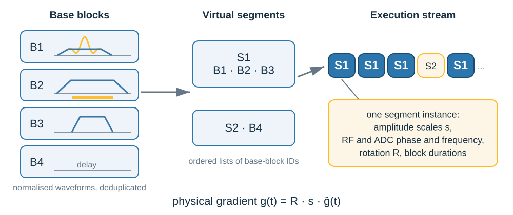
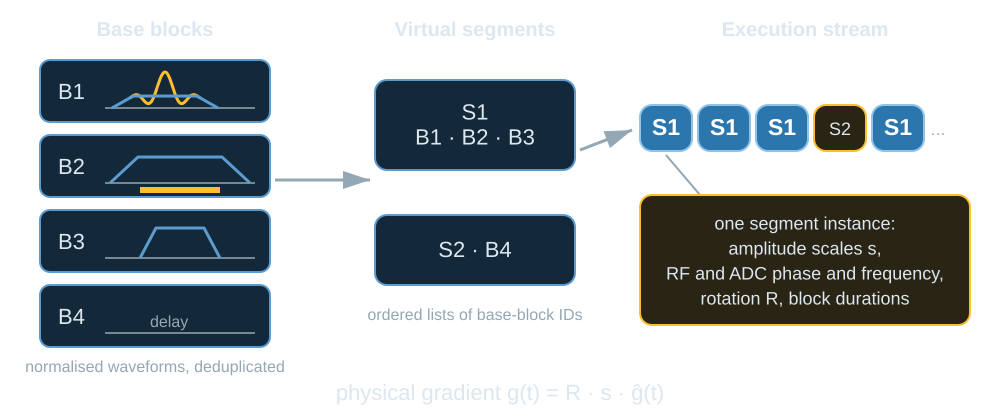
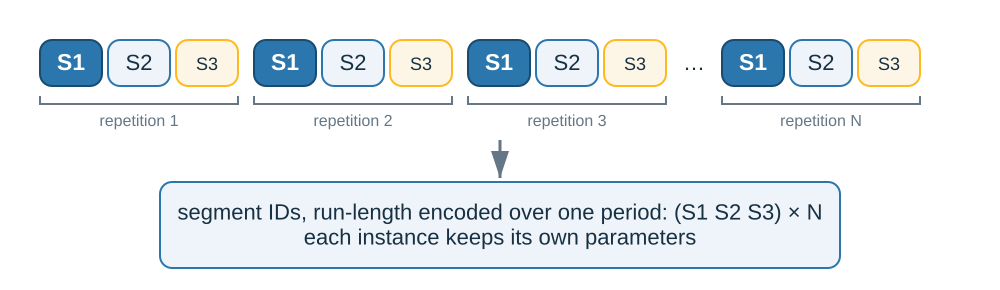
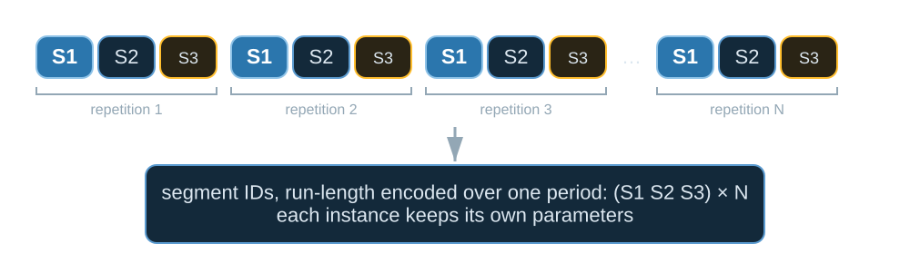

Scanner representation (PulSeg)#
TL;DR
A scanner interpreter plays a sequence as an execution stream of segment instances. Each instance plays a virtual segment, an ordered list of base blocks, with its own amplitude scales, RF and ADC phase and frequency, rotation and block durations.
pulserver computes this representation on the host from a Pulseq chain and writes it into the IR cache beside the sequence file.
When a sequence repeats, conversion uses the repetition pypulseqpp reports, finds the virtual segments inside it at near-zero gradients, and stores the stream’s segment IDs once per period. A sequence that does not repeat is one repetition, refused above 15 s.
The terms are PulSeg’s. Segment boundaries, the meaning of
TRIDand the use of periodicity are pulserver’s own.
PulSeg provides the conceptual IR model used by pulserver. pulserver adapts and extends that model for scanner execution, including automatic discovery of periodicity and segment boundaries.
Pulseq input#
A Pulseq sequence is an ordered list of blocks whose RF, gradient and ADC
events reference shared libraries; pypulseqpp’s
Pulseq representation
page states the format. convert() reads the
NextSequence chain starting at a sequence file with pypulseqpp.Sequence.
Each file of the chain is a subsequence of one scan, played in order, such as
a prescan followed by the imaging sequence, and is converted on its own.
The PulSeg model#

Base blocks with normalised waveforms; virtual segments as ordered lists of base-block IDs; the execution stream as segment instances, each holding the parameters of one occurrence.#

Base blocks with normalised waveforms; virtual segments as ordered lists of base-block IDs; the execution stream as segment instances, each holding the parameters of one occurrence.#
The model is that of the PulSeg specification, version 2.1-alpha, sections 2 and 3 (HarmonizedMRI/pulseg).
A base block is a Pulseq block whose waveform amplitudes are normalised: it fixes the shapes and timing of its events but not their amplitudes. Equal base blocks are stored once.
A virtual segment is an ordered list of base-block IDs, a reusable structural unit such as an excitation and readout or a preparation module. It need not be periodic.
A segment instance is one occurrence of a virtual segment in the scan. It holds the concrete execution parameters: the amplitude scale of each waveform, the RF and ADC phase and frequency offsets, the rotation and the block durations.
The execution stream is the ordered list of segment instances, and it defines the scan.
The physical gradient an instance plays is the base block’s normalised waveform \(\hat{g}(t)\) scaled and rotated,
with \(s\) the instance’s amplitude scale and \(R\) its rotation. A scanner prepares each virtual segment once, with its waveforms in waveform memory, and plays every instance of it by updating these parameters. Every block of the sequence is kept, in order, so the stream reproduces the sequence it was converted from.
Repetition and virtual segments#
The cost of preparing the scan, and the size of the tables an interpreter loads, grow with the number of distinct virtual segments and with how irregular the stream is. Most sequences play one block pattern many times with new amplitudes and phases, and conversion exploits that.
The repetition of a subsequence is the period pypulseqpp.Sequence.repetition
reports, starting at the first block; conversion does not search for one of its
own. The virtual segments are cut from that repetition at the block boundaries
the Grouping admits:
a boundary may fall only where every gradient is within
boundary_gradient_hz_per_mof zero, 100 Hz/m by default;a boundary must fall where the
NOROTorPMClabel changes, since the interpreter sets one prescription rotation per segment instance, and conversion fails when such a change falls under a gradient;navigator readouts, pure delays at the edge of a segment, and runs that play other RF or ADC events are split off as virtual segments of their own, according to the grouping, with at most 64 variants of a segment.
The virtual segments are then tiled over the execution stream. The sequence of segment IDs is run-length encoded over one period, the shortest that the whole stream is measured to repeat with; each instance keeps its own parameters.

One repetition of three virtual segments, played N times: the segment IDs are stored once per period, and each instance keeps its own parameters.#

One repetition of three virtual segments, played N times: the segment IDs are stored once per period, and each instance keeps its own parameters.#
Non-periodic sequences#
A subsequence that does not repeat is one repetition, the whole subsequence.
It is segmented under the same grouping, its stream is still complete, and its
segment IDs are run-length encoded without a period. Conversion refuses a
single repetition longer than 15 s (SINGLE_TR_MAX_DURATION_US in
src/cpp/ir/structure.cpp). The limit belongs to pulserver’s playout memory
model, not to PulSeg.
Differences from PulSeg 2.1-alpha#
Aspect |
PulSeg 2.1-alpha |
pulserver |
|---|---|---|
Segment-instance boundaries |
Marked by the sequence designer with |
Found within the repetition under the |
|
Identifies the virtual segment an instance plays |
A sticky group, reported to the interpreter’s checks with the duration of each occurrence; it places no segment boundary |
Periodicity |
Not part of the model |
Taken from pypulseqpp when present, and used to encode the stream |
Multishot gradient variants |
One base block with shot variants, chosen per instance by the optional |
No shot index: a gradient that differs between instances is played as a wave from waveform memory, or the run is a variant of its virtual segment |
Field-of-view offset#
A pypulseqpp sequence is written in the logical frame, about the isocentre.
prescribe() moves every file of the chain to the
prescribed field-of-view offset before conversion, without changing a
gradient: each RF pulse and ADC event receives the frequency and phase
offsets the offset requires, taken for a readout at the middle of its sampling
window. The cache keeps no ADC phase modulation, so where a readout gradient
varies across the window, the reconstruction proxy applies the remaining phase
from the trajectory, and from the header’s fov_offset_mm when it states
another position (Raw-data enrichment and routing). The prescription’s rotation is not
applied to the cache: the scanner composes it after each block’s own rotation.
Two offsets give two caches, and two designs (Designs and the design store).
See also#
IR cache — the conversion passes, waves, the two stages of a playout and the cache file.
IR conversion — the conversion interface.
Protocol resolution — the protocol entries the offset arrives in.
Segmentation of a sequence for the scanner — the segmentation of shipped sequences, executed.